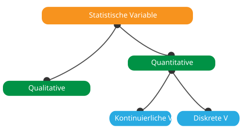
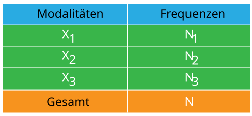

Definitionen der Begriffe
1- Beschreibende Statistik
ist der Zweig der Statistik, der bei Bedarf Methoden zur Erhebung,
Verarbeitung, quantitativen und qualitativen Analyse von Daten entwickelt.
Ziel der deskriptiven Statistik ist es, die verfügbaren Daten zu beschreiben,
d. h. durch Statistiken zu fassen oder darzustellen, wenn sie zahlreich sind.
2- Die statistische Grundgesamtheit ist die Gesamtheit von Fakten, Personen, Objekten oder Phänomenen, auf die sich die statistische Studie bezieht.
3- Die statistische Einheit ist ein konstitutives Element der statistischen Grundgesamtheit.
4- Der statistische Charakter
ist eine unverwechselbare Eigenschaft der statistischen Interesseneinheit.
Ex: Alter, Geschlecht, Religion, ...
Ein Merkmal soll
quantitativ sein, wenn es messbar ist, und qualitativ, wenn es nicht ist.
5- Die statistischen Modalitäten
sind die möglichen Werte oder Situationen, die einem statistischen Merkmal
zugeordnet werden können
Ex: Männlich / Weiblich für Geschlecht
6- Die statistische Variable
ist ein Attribut, das eine Person, einen Ort, eine Sache oder eine Idee
beschreibt.
Variablen können als qualitativ (aka, kategorisch) oder
quantitativ (aka, numerisch) klassifiziert werden Die Erkennung der
verschiedenen Arten von Variablen ist der erste Schritt in der
Datenanalyse, da die Wahl der zu verwendenden statistischen Werkzeuge
und Methoden davon abhängt.
6-1 Quantitative Variablen
sind numerisch und stellen eine messbare Größe dar. Wenn wir zum
Beispiel von der Bevölkerung einer Stadt sprechen, sprechen wir von
der Anzahl der Menschen in der Stadt - ein messbares Attribut der
Stadt, weshalb die Bevölkerung eine quantitative Variable wäre.
Es gibt zwei Arten von quantitativen Variablen: kontinuierliche
und diskrete quantitative Variablen.
Wenn eine Variable einen
beliebigen Wert zwischen ihrem Minimalwert und ihrem Maximalwert
annehmen kann, wird sie als kontinuierliche
Variable bezeichnet; ansonsten als
diskrete Variable.
6-2 Qualitative Variablen
Werte annehmen, die Namen oder Bezeichnungen sind. Die Farbe eines Balles
(z.B. rot, grün, blau) oder die Rasse eines Hundes (z.B. Collie, Hirte,
Terrier) wären Beispiele für qualitative oder kategorische Variablen. Wie
bei den quantitativen Variablen werden zwei Arten unterschieden: nominale
und ordinale qualitative Variablen.
Nominale qualitative Variablen zeichnen sich
durch nicht bestellbare Modalitäten aus, wie z.B. Haarfarbe (weiß, schwarz, rot...)
und Kontrast,
Ordinale qualitative Variablen zeichnen sich
durch ordnungsfähige Modalitäten aus, wie z.B. das Bildungsniveau
(Primar-, Sekundar-, Hochschulniveau).

7- Die Frequenz ist die Anzahl der statistischen Einheiten mit einer gegebenen Modalität, es wird Ni notiert und wird immer noch als absolute Frequenz bezeichnet.
8- Die statistische Erhebung ist ein Vorgang zur Erfassung von Daten oder Informationen.
9- Der Zählprozess ist der Prozess des Zählens oder Zählens der Daten oder Beobachtungen, die aus einer statistischen Erhebung gewonnen wurden.
10- Die statistische Tabelle
ist eine Möglichkeit, statistische Daten durch eine systematische
Anordnung der Zahlen, die ein Massenphänomen oder -prozess beschreiben,
darzustellen.
Drei Arten von statistischen Tabellen werden je nach
Struktur des Subjekts unterschieden. In einfachen Tabellen ist das
Thema ein einzelnes Phänomen. In Zwei-Wege-Tabellen zeigt das Subjekt
die Klassifizierung in Bezug auf einen einzigen Faktor. In Mehrwegtabellen
werden Klassifizierungen in Bezug auf zwei oder mehr Faktoren im Fach
verwendet.
Statistische Tabellen sollten alle notwendigen Informationen
in kompakter Form enthalten. Die Überschriften in den Tabellen sollten
präzise und kurz sein. Es sind die verwendeten Maßeinheiten sowie Ort und
Zeit, auf die sich die Informationen beziehen, anzugeben.

11- Die grafische Darstellung auch bekannt als grafische Techniken, sind Grafiken im Bereich der Statistik, die zur Visualisierung von Daten verwendet werden. Durch die grafische Darstellung der Daten erhalten wir eine sofortige Analyse der Daten. Die wichtigsten grafischen Darstellungen sind Histogramm, Boxplot, Balkendiagramm, Liniendiagramm und Kreisdiagramm.

12- Die beschreibenden Parameter erlauben, die Verteilungen der Variablen, aus denen sich die Stichprobe zusammensetzt, in wenigen Abbildungen zusammenzufassen. Je nach Typ der Variablen werden unterschiedliche Parameter verwendet. So werden Frequenzen und Anteile nach den Modalitäten einer qualitativen Variable und einem breiteren Spektrum von beschreibenden Parametern berechnet, die für eine quantitative Variable in zwei Gruppen unterteilt sind: Positionsparameter und Ausbreitungsparameter.
12-1 Die Positionsparameter sind Messungen der zentralen Tendenz, die Werte definieren, um die herum Beobachtungen verteilt sind.
12-1-a Der Mittelwert ist das Verhältnis zwischen der Summe der Werte der statistischen Reihen und der Anzahl der Werte.
12-1-b Der Median ist der Wert, der es erlaubt, eine numerische Reihe, die in zwei Teile der gleichen Anzahl von Elementen geordnet ist, zu teilen.
12-1-c Der Modus ist der am häufigsten dargestellte Wert einer Variablen in einer Population.
12-1-d Quartil ist eine Art Quantil. Das erste Quartil (Q1) ist definiert als die mittlere Zahl zwischen der kleinsten Zahl und dem Median des Datensatzes. Das zweite Quartil (Q2) ist der Median der Daten. Das dritte Quartil (Q3) ist der Mittelwert zwischen dem Median und dem höchsten Wert des Datensatzes.
12-1-e Perzentil oder ein Centile ist ein Maß für die Statistik, das den Wert angibt, unter den ein bestimmter Prozentsatz der Beobachtungen in einer Gruppe von Beobachtungen fällt.
12-2 Dispersionsparameter die Verteilung der Beobachtungen um die zentralen Werte herum zu bewerten.
12-2-a Bereich ist die Differenz zwischen dem höchsten Wert der Variable und dem kleinsten Wert.
12-2-b Abweichung ist die Erwartung der quadratischen Abweichung einer Zufallsvariablen von ihrem Mittelwert.
12-2-c Die Standardabweichung ist der Indikator, der verwendet wird, um die Streuung einer quantitativen statistischen Reihe zu messen. Sie ist gleich der Quadratwurzel der Varianz.
12-2-d Interquartilintervall ist die Differenz zwischen dem ersten und dritten Quartil. Sie enthält 50% der Daten (25% auf beiden Seiten des Medians).
13- Die relative Frequenz oder Verhältnis ist das Verhältnis zwischen der absoluten Frequenz eines Wertes und der gesamten absoluten Frequenz.
14- Die Kovarianz ist ein mathematisches Verfahren zur Bewertung der Variationsrichtung zweier Variablen, um ihre Unabhängigkeit zu qualifizieren.
15- Der Variationskoeffizient
ist der Indikator, der die Homogenität einer statistischen Verteilung misst
- Wenn sie kleiner oder gleich 33% ist, dann ist die Verteilung homogen
- Wenn sie größer als 33% ist, ist die Verteilung heterogen.